Исторические и справочные гербы


Volgograd
Путеводитель. Объектов в этом выпуске: 31.
OTIUM — практика нарочитого досуга. В античном смысле otium — не побег от работы, а время, когда внимание возвращается к памяти, пейзажу и мысли — без прикладного дедлайна.
Мы выстраиваем маршруты для неспешного присутствия, а не для чек-листа достопримечательностей: важно быть в месте, а не «потреблять» виды.
OTIUM — не туроператор. Это приглашение пройтись, остановиться и оставить маршрут незавершённым, если свет на фасаде заслуживает ещё минуты.
Исторические и справочные гербы
Путеводитель. Объектов в этом выпуске: 31.
Волгоград — город на Нижней Волге, административный центр области, известный как Сталинград.
Царицын, индустриальная эпоха, Сталинградская битва 1942–1943 гг. и мемориал на Мамаевом кургане определили память о Великой Отечественной войне. Сегодня это речной порт и промышленный узел юга России.
Послевоенное восстановление превратило Сталинград в символ победы; переименование в Волгоград отразило десталинизацию. Сегодня город сочетает мемориалы, Волгу и промышленность юга России, напоминая о цене мира.

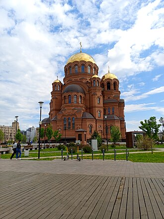


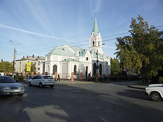
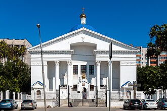
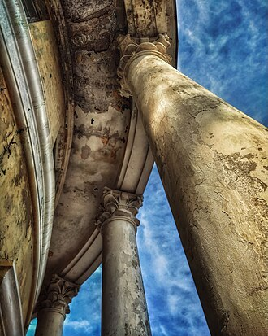

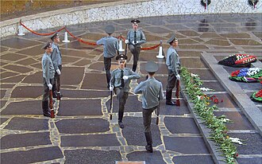
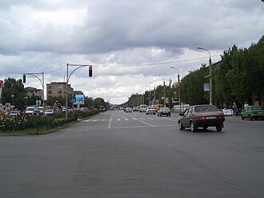

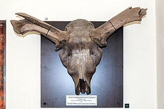


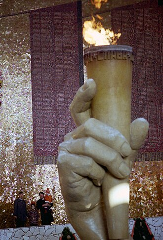

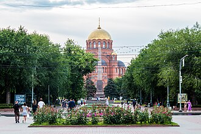
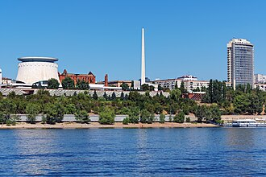

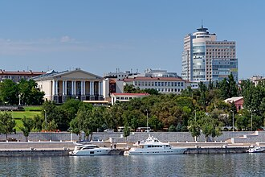
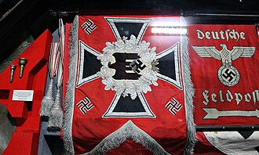
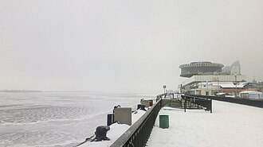

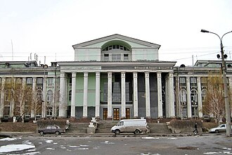
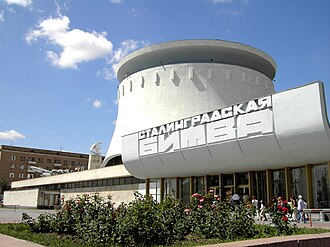